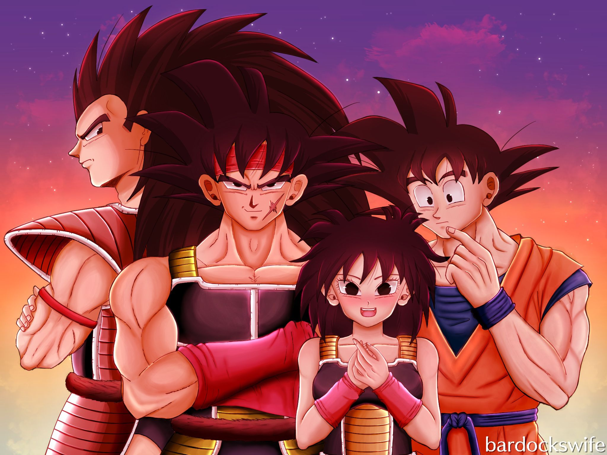
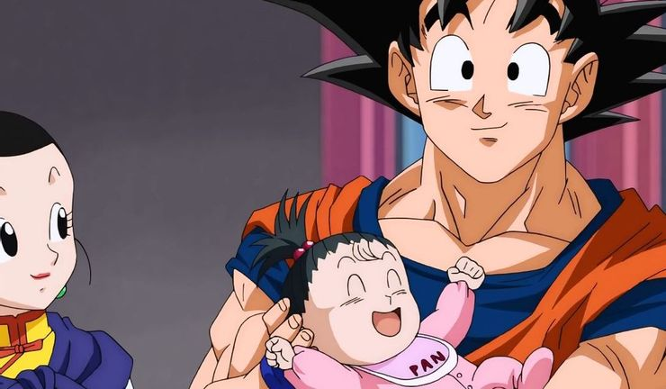

.jpg)


At age 12, Goku meets Chi-Chi and inadvertently becomes engaged to her when she falls madly in love with him. Chi-Chi is the daughter of Ox-King, who is the ruler of Fire Mountain. Five years later, Goku decides to fulfill his childhood promise to Chi-Chi and marries her in a traditional ceremony, much to the delight of her father, Ox-King. After their first year as a married couple, Chi-Chi gives birth to their first son, whom Goku names Gohan after his adoptive grandfather. Goku and Chi-Chi prove to be loving and doting parents and Ox-King as a grandfather. However, Goku wanted to train Gohan in martial arts to follow the family tradition but Chi-Chi never takes to this and is adamant Gohan dedicate his time and strength to studying so he can become a scholar. Goku, although confused, lets Chi-Chi dominate the lives of her husband and son due to his fear of her temper. When Gohan gets older and proves to be potentially one of the strongest people ever known, Goku uses this revelation to train him and teaches him everything he knows to be a warrior. Goku is too occupied with training and Chi-Chi is too focused on educating Gohan to the point both have to rely on her father to support the family financially.

As a child, Chi-Chi was very shy and often thought about who she would marry. Despite being the daughter of the Ox-King, who had a reputation of being terrifying, she was shown to be the opposite of him, as she was shown to be of pure heart by being able to ride the Flying Nimbus. During fighting, she is often scared and defeats her opponent while crying. An example of one of Chi-Chi's comically ridiculous fits of rage Chi-Chi's personality changed when she became an adult, especially after marrying Goku and having her son Gohan. She is often depicted as a sometimes nagging, overprotective, controlling, tough and fundamentally well-meaning woman, similar to the stereotypical overbearing shōnen mother, compared to Bulma's personality, who is happy and easy-going. Though her power pales in comparison to most of the Dragon Team, she is still one of the strongest women in the world and has been seen fighting well above the level of an average human on more than one occasion. She is also shown to be mentally clumsy at times, such as when she hits Krillin in the head with a door, thinking he is Gohan. Although Chi-Chi is often seen yelling at Goku over fighting, or Gohan over his schoolwork, it cannot be disputed that she loves Goku and her family very much. This is shown at the end of the Buu Saga, when she is brought to tears and hugs Goku just over the thought of finally getting to live as a family of four with Goku, Gohan, and Goten. Also, she seems to worry about Goku the most when he develops a Heart Virus in the Androids Saga and Imperfect Cell Saga, caring for him and crying by his bedside. When she finds out that Goku is all better, she jumps out of Kame House and runs to Goku and gives him a big hug, to which Goku responds by swinging her around. She usually cries when she finds out Goku is injured or dead, or when he's home safe, clearly showing her love for her husband.
Son Gohan (Son Gohan) is a half-breed Saiyan and one of the most prominent characters in the Dragon Ball series. He is the elder son of the series' primary protagonist Goku and his wife Chi-Chi, the eldest nephew of Raditz, the older brother of Goten, the husband of Videl and father to Pan. He is named after Goku's adoptive grandfather, Gohan. As a child, Gohan is a shy and studious intellectual child who lacks the Saiyan fighting spirit, so he had to utilize his incredible half-breed Saiyan potential and emotional reserves to protect those he loves, becoming one of the most powerful Z Fighters. As an adult, he achieves his dream career of becoming a great scholar. Being only half-Saiyan, Gohan is unusual in his values and personality compared to most full-Saiyans. These unique values and personality separate him from pure Saiyans; as powerful as he is, he does not like fighting much. However, when he is forced to fight, he shows special interest in protecting his family and friends. Like his father, Gohan has a truly pure and gentle heart, apart from having the typical Saiyan appetite and will eat anything.[3] Though he claims he does not share the love of fighting Goku has, Gohan does indeed love martial arts and adventures. It is also clearly obvious that he enjoys his superhuman powers, and he greatly enjoys using them to be a superhero, though he dislikes receiving the fame and attention that comes with it and prefers to keep a low profile, which is why he created the Great Saiyaman persona, in order to keep his identity a secret. This is even more evident when he didn't acknowledge Cell's defeat at his hands to the public after Mr. Satan falsely took credibility for it. During the Zeno Expo, he admitted that his Saiyan half was getting excited from the challenge shown by Top of Universe 11, demonstrating that even though he despises senseless violence, he actually does enjoy fighting as a sport. It is possible that he prefers not to fight due to the many gruesome and painful fights he experienced in the past, and because of these battles, Gohan has negative emotions associated with fighting. However, even though he is naturally smart, humble and kind, Gohan himself has been a victim of his own power in the past, whenever Gohan gets a gigantic power boost, he becomes arrogant and cocky, essentially becoming drunk in his power, often acknowledging and even enjoying his superiority over his opponents, as he did when he first became a Super Saiyan 2 against Cell, and later in his life when he achieved his Ultimate form, and fought Super Buu. This fatal flaw of his warrior-personality might be an actual side-effect of his Saiyan-heritage, since Saiyans such as Vegeta, or Nappa, have been known to act similarly when drunk in their own power while fighting. This had to lead him to the brink of defeat on several occasions and has later had to deal with the consequences of his actions, such as the death of his father at the hands of Cell, or Super Buu absorbing him and endangering the entire universe in the process. However, thanks to Piccolo, Gohan works on overcoming this flaw of his, to not let his own superior power blind him on the battlefield ever again.
Son Goten (Son Goten) is the youngest son of Goku and his wife Chi-Chi, making him a Saiyan and Earthling hybrid. Goten is Gohan's younger brother and Trunks' best friend. Goten's appearance as a child is a spitting image of Goku's childhood look, including messy, unkempt hair, same eye color, lighter-pale complexion and a playful face. He also wears an orange gi similar to Goku's, minus the kame symbol, along with a dark blue long-sleeved undershirt and black training shoes with dark blue shin guards in the Majin Buu Arc. Goten is known for looking almost identical to his father as a child, to the point when Goku first meets Goten he proclaims "I think there is a little me hiding behind your leg Chi-Chi!" This resemblance to his father is pointed out numerous times by other characters throughout the series, as well as in a few video games. His appearance drastically changes as he grows older, towards the end of Dragon Ball Z. Goten's hair grew, so that he would not be mistaken for Goku and is seen with a shaggier hairstyle similar to Yamcha and also wears an orange gi similar to what Pan wears at the World Martial Arts Tournament.
.jpg)
Goku and his children sure love to eat
Goku with his father Bardok mother Gine and his older brother Raditz
Full Family Photo
Copyright © 2021 Amar Raut rautamar.com | All Rights Reserved